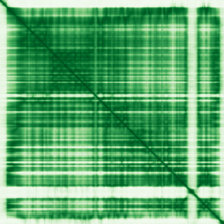

type: protein-evaluation gene: "CACNA2D3" date: 2026-06-03 tags: [protein-scout, nuclear-protein, evaluation] status: rejected ---
CACNA2D3 核蛋白评估报告 (Full Re-evaluation)
1. 基本信息
| 项目 | 内容 |
|---|---|
| 基因名 / 别名 | CACNA2D3 / 无 |
| 蛋白名称 | Voltage-dependent calcium channel subunit alpha-2/delta-3 |
| 蛋白大小 | 1091 aa / 123.0 kDa |
| UniProt ID | Q8IZS8 |
| 评估日期 | 2026-06-03 |
| 数据采集时间 | 2026-05-31 22:43:51 |
2. 评分总览
评估状态：REJECTED 拒因：Nuclear localization score 2/10 <= 3
| 维度 | 得分 | 满分 | 加权后 | 关键证据摘要 |
|---|---|---|---|---|
| 核定位特异性 | 2/10 | x4 | 8 | UniProt: Membrane |
| 蛋白大小 | 7/10 | x1 | 7 | 1091 aa / 123.0 kDa |
| 研究新颖性 | 4/10 | x5 | 20 | PubMed strict=80 篇 (61-80->4) |
| 三维结构 | 9/10 | x3 | 27 | AlphaFold v6 pLDDT=83.0 |
| 调控结构域 | 10/10 | x2 | 20 | InterPro: 5; Pfam: 3; IPR051173, IPR013680... |
| PPI 网络 | 8/10 | x3 | 24 | STRING 15 partners; IntAct 11 interactions |
| 互证加分 | -- | max +3 | 1.0 | STRING + IntAct 双源验证: +0.5; 结构域 + AlphaFold 质量: +0.5 |
| 原始总分 | 107.0/180 | |||
| 归一化总分 (/1.83) | 58.5/100 |
3. 详细分析
3.1 核定位证据
| 来源 | 定位 | 可信度 |
|---|---|---|
| Protein Atlas (IF) | 无数据; 额外: 无 | N/A |
| UniProt | Membrane | Swiss-Prot/TrEMBL |
IF 图像说明: HPA IF 原图未可靠获取（HPA检索页无可用的subcellular IF原图）。核定位基于HPA localization/reliability + UniProt + GO-CC。
GO Cellular Component:
- GABA-ergic synapse (GO:0098982)
- presynaptic active zone membrane (GO:0048787)
- voltage-gated calcium channel complex (GO:0005891)
结论: 核定位证据薄弱，主要数据源不支撑特异核定位，或存在明确矛盾信号。
3.2 蛋白大小评估
评价: 1091 aa，蛋白偏大（> 800 aa），表达纯化有一定难度。
3.3 研究现状
| 指标 | 数值 |
|---|---|
| PubMed strict count | 80 |
| PubMed broad count | 120 |
关键文献: 1. Deletions of Cacna2d3 in parvalbumin-expressing neurons leads to autistic-like phenotypes in mice.. *Neurochemistry international*. PMID: 37419212 2. Human sensory-like neuron surfaceome analysis.. *PloS one*. PMID: 40173182 3. Characterization of CACNA2D3 as a putative tumor suppressor gene in the development and progression of nasopharyngeal carcinoma.. *International journal of cancer*. PMID: 23649311 4. Methylation of the calcium channel-related gene, CACNA2D3, is frequent and a poor prognostic factor in gastric cancer.. *Gastroenterology*. PMID: 18588891 5. Editors' Note to: EDAR, LYPLAL1, PRDM16, PAX3, DKK1, TNFSF12, CACNA2D3, and SUPT3H gene variants influence facial morphology in a Eurasian population.. *Human genetics*. PMID: 31807863
评价: 研究较多，新颖性一般（PubMed 61-80篇）。新颖性评分 4/10。
3.4 三维结构分析
| 指标 | 数值 |
|---|---|
| AlphaFold 版本 | v6 |
| AlphaFold 平均 pLDDT | 83.0 |
| 高置信度残基 (pLDDT>90) 占比 | 40.1% |
| 置信残基 (pLDDT 70-90) 占比 | 46.9% |
| 中等置信 (pLDDT 50-70) 占比 | 6.4% |
| 低置信 (pLDDT<50) 占比 | 6.5% |
| 有序区域 (pLDDT>70) 占比 | 87.0% |
PAE 图像暂无数据（未生成本地图片或未可靠获取），结构判断基于AlphaFold pLDDT统计。
评价: AlphaFold高质量预测（pLDDT=83.0），预测结构可信。三维结构评分 9/10。
3.5 结构域分析
| 来源 | 结构域 |
|---|---|
| InterPro/Pfam | InterPro: IPR051173, IPR013680, IPR013608, IPR002035, IPR036465; Pfam: PF08473, PF13768, PF08399 |
染色质调控潜力分析: 存在 8 个已知结构域注释，可作为功能研究的结构基础。
3.6 PPI 网络
STRING 预测互作 (combined score > 0.4):
| Partner | Combined Score | Experimental | 功能类别 |
|---|---|---|---|
| CACNG1 | 0.941 | 0.595 | -- |
| CACNB2 | 0.939 | 0.306 | -- |
| CACNA1A | 0.936 | 0.289 | -- |
| CACNB1 | 0.926 | 0.306 | -- |
| CACNA1E | 0.896 | 0.289 | -- |
| CACNB3 | 0.890 | 0.306 | -- |
| CACNB4 | 0.888 | 0.306 | -- |
| CACNA1D | 0.876 | 0.289 | -- |
| CACNA1B | 0.874 | 0.289 | -- |
| CACNA1C | 0.871 | 0.289 | -- |
实验验证互作 (IntAct):
| Partner | 方法 | PMID | ||
|---|---|---|---|---|
| RAD51C | anti bait coimmunoprecipitation | pubmed:17353931 | ||
| TCOF1 | cross-linking study | pubmed:30021884 | imex:IM-26653 | doi:10.1074/mcp.ra118.000924 |
| GPAA1 | anti tag coimmunoprecipitation | pubmed:33961781 | imex:IM-29278 | doi:10.1016/j.cell.2021.04.011 |
| APOE | anti tag coimmunoprecipitation | pubmed:33961781 | imex:IM-29278 | doi:10.1016/j.cell.2021.04.011 |
| PAGE2B | anti tag coimmunoprecipitation | pubmed:33961781 | imex:IM-29278 | doi:10.1016/j.cell.2021.04.011 |
| SPCS1 | anti tag coimmunoprecipitation | pubmed:33961781 | imex:IM-29278 | doi:10.1016/j.cell.2021.04.011 |
| CEACAM8 | anti tag coimmunoprecipitation | pubmed:33961781 | imex:IM-29278 | doi:10.1016/j.cell.2021.04.011 |
| PSCA | anti tag coimmunoprecipitation | pubmed:33961781 | imex:IM-29278 | doi:10.1016/j.cell.2021.04.011 |
| SCGB2A2 | anti tag coimmunoprecipitation | pubmed:33961781 | imex:IM-29278 | doi:10.1016/j.cell.2021.04.011 |
| SFSWAP | anti tag coimmunoprecipitation | pubmed:33961781 | imex:IM-29278 | doi:10.1016/j.cell.2021.04.011 |
PPI 互证分析:
- STRING + IntAct 均有数据
- STRING partners: 15，IntAct interactions: 11
评价: 互作网络中等：STRING 15 预测 + IntAct 11 实验互作。PPI 评分 8/10。
3.7 多库互证
| 维度 | 来源 | 结果 | 是否一致 |
|---|---|---|---|
| 三维结构 | AlphaFold v6 | pLDDT=83.0 | 单一来源 |
| 定位 | -- | 无明确核定位数据 | -- |
| PPI | STRING + IntAct | 15 + 11 interactions | 数据充分 |
互证加分明细:
- STRING + IntAct 双源验证: +0.5
- 结构域 + AlphaFold 质量: +0.5
总分: +1.0 / max +3
4. 总体评价
归一化总分: 58.5/100 状态: REJECTED -- Nuclear localization score 2/10 <= 3
核心优势: 1. AlphaFold高质量预测（pLDDT=83.0），结构可信度高。 2. 存在 8 个已知结构域，有明确的结构-功能切入点。
风险/不确定性: 1. 核定位信号较弱或存在矛盾（评分 2/10），需IF实验验证 2. 暂无PDB实验结构，结构证据完全依赖AlphaFold预测
下一步建议:
- [ ] 查阅最新关键文献补充研究背景
- [ ] 获取 Protein Atlas IF 图像确认亚细胞定位
- [ ] 考虑通过AlphaFold预测 + MD模拟获取结构信息
5. 数据来源
- UniProt: https://www.uniprot.org/uniprotkb/Q8IZS8
- Protein Atlas: https://www.proteinatlas.org/search/CACNA2D3
- PubMed: https://pubmed.ncbi.nlm.nih.gov/?term=CACNA2D3
- AlphaFold: https://alphafold.ebi.ac.uk/entry/Q8IZS8
- STRING: https://string-db.org/network/9606.CACNA2D3
- Packet data timestamp: 2026-05-31 22:43:51
